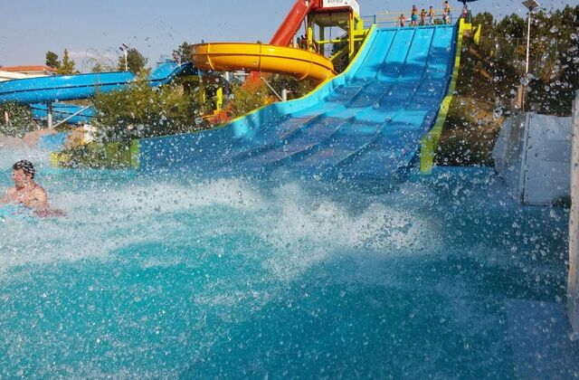
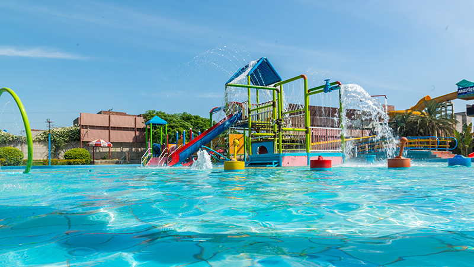

About Splash Planet Water Park
Welcome to The Splash Planet Water Park, Karachi, a truly world class water by all means. Splash Planet is a hi-tech, action packed, thrilling entertainer with amazing features for all ages.
Visitors bursting with energy, It can be yours ultimate water sports holiday destination For those who just want to relax and unwind it is cool-cool indoors where you’ll find a wealth of things to do, from zipping down our scintillating slides to amazing rides. You can do as much or as little as you like in a safe environment for you and your family.
Splash Planet Water Park is the only amusement park in Pakistan that has a huge separate water park just for ladies.
It has its own canteen, lockers and washrooms. It is big enough to entertain 2000 women at the same time. It has huge slides for the thrill seekers and small ones for children under 5 and those who just want to have a good time.
Safety And Security First
We take safety very seriously. All our rides are checked and certified for electrical, mechanical and structural safety by engineers from UET before we operate them. This certification is acquired every few months. We have also hires an outside consultant to check safety and integrity of all slides and dry rides every year.
All rides and slides are test run in the morning before the park opens for public to make sure that they are safe for use and in proper working condition. Every attraction at Splash Planet has been designed by a structural and mechanical engineer and are load tested for all scenarios before they are constructed and opened for public.


The Great Family WaterPark
Largest WaterPark In
Karachi
CONTACT US
For any queries and updates please feel free to contact us :
+92 333 3529940/41
Survey No. 25, Main Super Highway,Karachi.
info@Splashplanet.com
Latest Update :
Park is currently closed due to Pandemic.